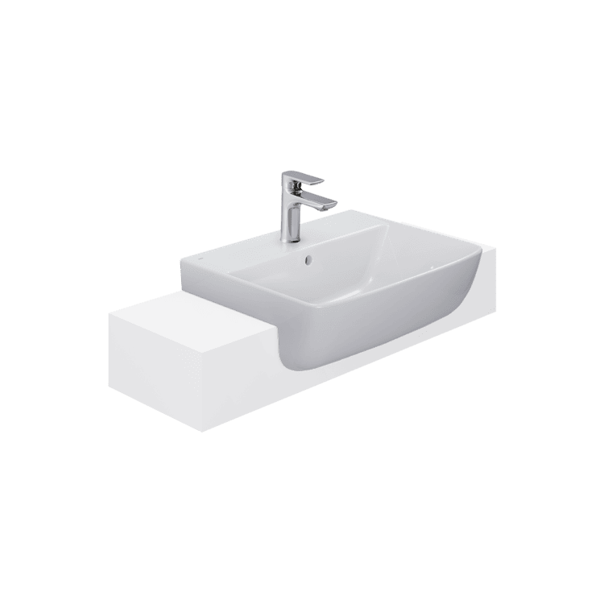
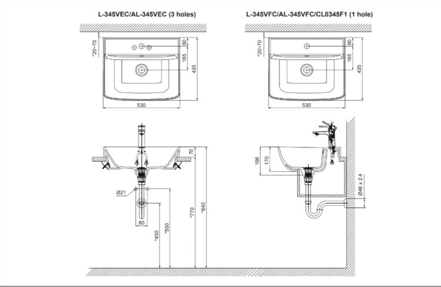

Chậu rửa bán âm AL-345V của INAX được thiết kế theo phong cách tinh gọn, hiện đại, phù hợp với nhiều kiểu không gian phòng tắm. Sản phẩm được chế tác từ sứ cao cấp và ứng dụng công nghệ Aqua Ceramic tiên tiến, giúp bề mặt sáng bóng, chống bám bẩn và duy trì độ trắng sạch bền vững trong nhiều năm sử dụng.Với kiểu dáng bán âm bàn, chậu rửa AL-345V giúp tối ưu diện tích, tạo cảm giác thoáng đãng, thanh lịch cho không gian. Đây là lựa chọn lý tưởng cho những gia chủ đề cao sự tiện nghi, thẩm mỹ và độ bền lâu dài.Thiết kế chậu rửa bán âm AL-345VThiết kế bán âm bàn hiện đại, với phần chậu được lắp đặt âm xuống bàn, chỉ để lộ viền nổi bên trên, tạo cảm giác gọn gàng và tinh tế cho phòng tắm.Đường nét mềm mại, cân đối, kiểu dáng bo tròn hài hòa giúp không gian trở nên thanh thoát, dễ kết hợp với nhiều phong cách nội thất.Kích thước tiêu chuẩn hợp lý, được tính toán phù hợp với mặt bàn lavabo, mang lại sự thoải mái khi sử dụng và tối ưu hóa diện tích.Bề mặt sứ trắng bóng cao cấp nhờ sử dụng công nghệ Aqua Ceramic chống bám bẩn, giữ độ sáng bóng dài lâu và hạn chế ố vàng sau thời gian dài sử dụng.Tích hợp lỗ xả tràn, giúp ngăn ngừa tình trạng tràn nước, đảm bảo an toàn và duy trì độ bền cho sản phẩm.Tính năng nổi bật của chậu rửa bán âm AL-345VCông nghệ Aqua Ceramic đột phá: Giữ bề mặt men sứ sáng bóng hạn chế bám bẩn, ngăn ngừa ố vàng và dễ dàng vệ sinh chỉ với nước.Đế vòi phẳng tiện lợi: Hạn chế tích tụ bụi bẩn, đồng thời có thể tận dụng để đặt các vật dụng nhỏ như xà phòng hay phụ kiện rửa mặt.Lỗ thoát tràn an toàn: Giúp kiểm soát lượng nước trong chậu, ngăn tràn hiệu quả, bảo vệ khu vực lắp đặt và tăng độ bền sản phẩm.Lòng chậu sâu: Hạn chế bắn nước khi rửa mặt hay rửa tay, mang đến cảm giác dễ chịu trong suốt quá trình sử dụng.Video giới thiệu chậu rửa bán âm AL-345VVideo giới thiệu chậu rửa INAXĐể tăng tính đồng bộ và nâng cao trải nghiệm, chậu rửa bán âm bàn INAX AL-345V nên được kết hợp cùng vòi chậu LFV-612S. Sản phẩm mang thiết kế hiện đại, sang trọng, giúp điều chỉnh dòng chảy linh hoạt, tạo trải nghiệm sử dụng tiện nghi tối đa và góp phần xây dựng không gian phòng tắm tinh tế, đẳng cấp.Bản vẽ lắp đặt chậu rửa bán âm AL-345VXem hướng dẫn lắp đặt chậu rửa bán âm AL-345V tại đây.Thông số kỹ thuậtChất liệuSứKiểu dángChậu rửa bán âmKích thước435 x 530 x 196 mmTính năng- Lỗ xả tràn tiện lợi, ngăn nước tràn ra ngoài. - Đế vòi phẳng, hạn chế bám bẩn và có thể tận dụng để đặt các vật dụng nhỏ. - Lòng chậu sâu, đa năng, mang lại trải nghiệm thoải mái khi sử dụng.Thương hiệuINAXThiết kế- Thiết kế dáng bán âm bàn sang trọng, hiện đại, tiết kiệm không gian, phù hợp với nhiều kiểu thiết kế phòng tắm. - Đường bo góc mềm mại, mang lại cảm giác thư giãn và an toàn khi sử dụng.Công nghệỨng dụng công nghệ AQUA CERAMIC giúp bề mặt sứ chống bám cặn, chống ố vàng, duy trì độ sáng bóng lâu dài.Màu sắcTrắngKhác- Gợi ý sản phẩm đi kèm: Vòi chậu LFV-612S, giúp đồng bộ và tăng tính tiện nghi cho không gian phòng tắm. - Hotline tư vấn: 18006633
Chậu rửa bán âm AL-345V
Chậu rửa thương hiệu INAX.
Đã cập nhật danh sách yêu thích.
DANH MỤC: Chậu rửa
MÃ SẢN PHẨM: AL-345V
DEPTH: 196mm
HEIGHT: 435mm
WIDTH: 530mm
Chậu rửa bán âm AL-345V của INAX được thiết kế theo phong cách tinh gọn, hiện đại, phù hợp với nhiều kiểu không gian phòng tắm. Sản phẩm được chế tác từ sứ cao cấp và ứng dụng công nghệ Aqua Ceramic tiên tiến, giúp bề mặt sáng bóng, chống bám bẩn và duy trì độ trắng sạch bền vững trong nhiều năm sử dụng.Với kiểu dáng bán âm bàn, chậu rửa AL-345V giúp tối ưu diện tích, tạo cảm giác thoáng đãng, thanh lịch cho không gian. Đây là lựa chọn lý tưởng cho những gia chủ đề cao sự tiện nghi, thẩm mỹ và độ bền lâu dài.Thiết kế chậu rửa bán âm AL-345VThiết kế bán âm bàn hiện đại, với phần chậu được lắp đặt âm xuống bàn, chỉ để lộ viền nổi bên trên, tạo cảm giác gọn gàng và tinh tế cho phòng tắm.Đường nét mềm mại, cân đối, kiểu dáng bo tròn hài hòa giúp không gian trở nên thanh thoát, dễ kết hợp với nhiều phong cách nội thất.Kích thước tiêu chuẩn hợp lý, được tính toán phù hợp với mặt bàn lavabo, mang lại sự thoải mái khi sử dụng và tối ưu hóa diện tích.Bề mặt sứ trắng bóng cao cấp nhờ sử dụng công nghệ Aqua Ceramic chống bám bẩn, giữ độ sáng bóng dài lâu và hạn chế ố vàng sau thời gian dài sử dụng.Tích hợp lỗ xả tràn, giúp ngăn ngừa tình trạng tràn nước, đảm bảo an toàn và duy trì độ bền cho sản phẩm.Tính năng nổi bật của chậu rửa bán âm AL-345VCông nghệ Aqua Ceramic đột phá: Giữ bề mặt men sứ sáng bóng hạn chế bám bẩn, ngăn ngừa ố vàng và dễ dàng vệ sinh chỉ với nước.Đế vòi phẳng tiện lợi: Hạn chế tích tụ bụi bẩn, đồng thời có thể tận dụng để đặt các vật dụng nhỏ như xà phòng hay phụ kiện rửa mặt.Lỗ thoát tràn an toàn: Giúp kiểm soát lượng nước trong chậu, ngăn tràn hiệu quả, bảo vệ khu vực lắp đặt và tăng độ bền sản phẩm.Lòng chậu sâu: Hạn chế bắn nước khi rửa mặt hay rửa tay, mang đến cảm giác dễ chịu trong suốt quá trình sử dụng.Video giới thiệu chậu rửa bán âm AL-345VVideo giới thiệu chậu rửa INAXĐể tăng tính đồng bộ và nâng cao trải nghiệm, chậu rửa bán âm bàn INAX AL-345V nên được kết hợp cùng vòi chậu LFV-612S. Sản phẩm mang thiết kế hiện đại, sang trọng, giúp điều chỉnh dòng chảy linh hoạt, tạo trải nghiệm sử dụng tiện nghi tối đa và góp phần xây dựng không gian phòng tắm tinh tế, đẳng cấp.Bản vẽ lắp đặt chậu rửa bán âm AL-345VXem hướng dẫn lắp đặt chậu rửa bán âm AL-345V tại đây.Thông số kỹ thuậtChất liệuSứKiểu dángChậu rửa bán âmKích thước435 x 530 x 196 mmTính năng- Lỗ xả tràn tiện lợi, ngăn nước tràn ra ngoài. - Đế vòi phẳng, hạn chế bám bẩn và có thể tận dụng để đặt các vật dụng nhỏ. - Lòng chậu sâu, đa năng, mang lại trải nghiệm thoải mái khi sử dụng.Thương hiệuINAXThiết kế- Thiết kế dáng bán âm bàn sang trọng, hiện đại, tiết kiệm không gian, phù hợp với nhiều kiểu thiết kế phòng tắm. - Đường bo góc mềm mại, mang lại cảm giác thư giãn và an toàn khi sử dụng.Công nghệỨng dụng công nghệ AQUA CERAMIC giúp bề mặt sứ chống bám cặn, chống ố vàng, duy trì độ sáng bóng lâu dài.Màu sắcTrắngKhác- Gợi ý sản phẩm đi kèm: Vòi chậu LFV-612S, giúp đồng bộ và tăng tính tiện nghi cho không gian phòng tắm. - Hotline tư vấn: 18006633
DANH MỤC: Chậu rửa
MÃ SẢN PHẨM: AL-345V
DEPTH: 196mm
HEIGHT: 435mm
WIDTH: 530mm